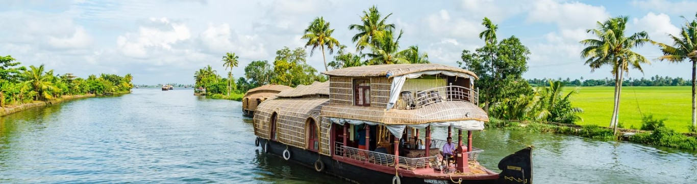
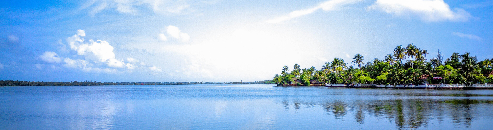

Experiece These


Named as one of the ten paradises of the world by National Geographic Traveler, Kerala is famous especially for its ecotourism initiatives and beautiful backwaters. Its unique culture and traditions, coupled with its varied demography, have made Kerala one of the most popular tourist destinations in the world.
The state boasts a high level of literacy, way above the country's standard (for men AND women) and life expentancy is the highest in the whole Indian sub-continent. With its communist political regime, Kerala is one of India's most stable states, where its citizens are the most involved.